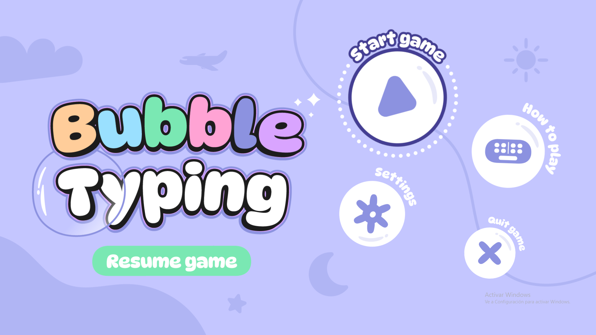

Bubble Typing es un juego de mecanografía diseñado para ayudarte a cuidar tus manos mientras te diviertes. Con mecánicas simples y solo unos minutos al día, puedes mejorar tu salud frente al computador de forma significativa. Reduce el riesgo de tendinitis, síndrome del túnel carpiano, dolores en el cuello, hombros y mucho más. Además, Bubble Typing fue desarrollado completamente durante el Global Game Jam 2025, donde la temática principal eran las burbujas.
Imágenes
Participación
En Bubble Typing, me encargué de la funcionalidad de la UI, el manejo de escenas, las animaciones (tanto de la UI como con código), la lógica del spawner y la navegación dentro de los menús. Todo el diseño gráfico fue creado desde cero por un compañero durante la Global Game Jam, mientras que el resto del equipo se encargó de la lógica de puntos, el guardado de progreso y la mecánica principal de explotar burbujas.